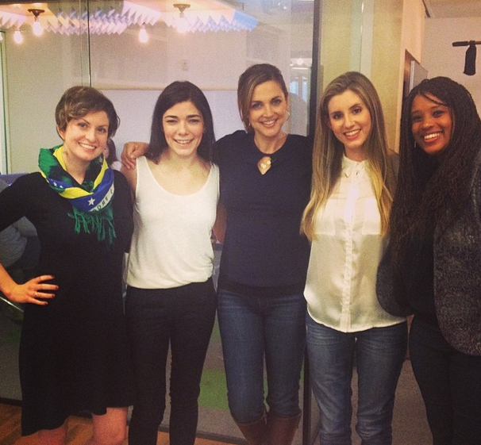

Daryush "Roosh" Valizadeh created ROK in October 2012. You can visit his blog at RooshV.com or follow him on Twitter and Facebook.


Every now and then, the gods bless us with a natural experiment that proves our concepts down the marrow. Recently a new “dating” service attempted to match up NYC spinsters with men in Silicon Valley. These golddiggers-in-training are well past their prime, as you can see in the below group photo, and that assumes that some of them actually ever experienced a prime.
Not the best of what NYC can offer
They have been tainted by hundreds of combined years on the cock carousel, of getting rode 50 Shades-style by aloof men who didn’t ultimately didn’t want to wife them up. In spite of an American dating market that values the vagina as if it was a large nugget of gold, they believed that pulling a Roosh was the solution to their problem. Of course they are called adventurous and open-minded while we’re sex tourists who “take advantage” of “poor” foreign women, but let’s give them the benefit of the doubt for a minute. Can they now find it in their souls to put all their cock experience and Tinder hookups aside to find the rich beta male they can have a family with?
On the plane, my seatmate flirts with the dashing Qatari journalist sitting between us. I eavesdrop, then ostentatiously put my earbuds in, but in fact I am still eavesdropping. When we land, they exchange business cards. This girl is not messing around.
Not a good start. A girl is flying over to meet rich nerds, but can’t help herself in getting tingles for a good-looking guy.
All 16 dates are occurring simultaneously at the same bar, which is a blessing, since gossiping about dates is more fun than actually going on them.
Drama and gossip is more important than talking to rich betas, I’m sure.
My first date is Greg, a tall, dark, and handsome 37-year-old Yahoo employee who used to support himself as a professional pickup artist, though he prefers the term “social coach.” Moved by a character in The Game known as “Juggler,” a young Greg sought Juggler out and apprenticed with him, eventually working full-time for Juggler’s company, Charisma Arts. “Honestly, most of the guys I coached just needed to practice eye contact and basic stuff like smiling,” he says. Did it work? “Well, a bunch of them have girlfriends now. And I don’t.”
(I was never into Juggler’s style of self-effacement in order to show some kind of ‘authentic’ vulnerability.)
It’s soon made clear in the article that the dating agency couldn’t find the promised rich men who wanted the golddiggers. What a surprise that sharp millionaires aren’t lining up to meet week-old milk.
Greg 2.0 agreed to participate in our bicoastal dating experiment because he loves San Francisco so much, he wants to evangelize. He’s looking for a serious girlfriend, and while he talks about these deeply personal matters, I exercise my peripheral vision in search of Greg 1.0 [Juggler].
The PUA provided more tingles than the nice guy. American women are the first to shame game tactics, but they can’t help using “peripheral vision” in seeking them out.

Which would you bang?
Alexa, a 24-year-old pop singer who has a song called “Twitter (Spaces in Between My Heart),” summons a bunch of jocks she met that morning at the gym. (Alexa’s first date offered to take her and the female friend of her choice to Napa Valley. She declined.) When the guys offer to take us to a hip-hop club, Alexa bends over and announces, “I’m gonna twerk my little thang!” A few drinks later at the club, my thang gets into a few undignified positions, too.
It must be humiliating for the nerds to think these girls want to meet them, flying across the country to do so, only to bring along cocks that they just met a couple hours prior. It’s almost like a pathological obsession to seek out cock (alpha or otherwise) in creating an orbiting universe of men around them.
Some of the men at this party are more eccentric than those we received as matches. A programmer who donated “several hundred dollars” to the Crowdtilt likens the donation to “giving $2 to a homeless person.” In an affectless voice, he analyzes the relative Asian-ness of each of my facial features, then explains his frustration with online dating: “I prefer to use reality as my platform. There’s zero latency, no lag. Do you know what lag is? When you do something online, you don’t get a response right away. Meeting women in reality — boom! — fully responsive.”
The programmer man has a great point—real-life interactions have no latency.
The author finally met a rich guy, but apparently nothing happened:
I meet an angel investor who admits he gave to the Crowdtilt to butter up CEO Lauren Kay so she’d accept his money. “With these Y Combinator companies, sometimes so many people want to invest that they end up turning down money,” he explained. He’d given money to the Dating Ring to secure the chance to give even more money to the Dating Ring. He wouldn’t tell me how much he invested, but did mention a desire to buy an airplane.
The insinuation of buying a jet provided zero tingles, even though these women predominately wanted a rich beta (it would be like me flying to Ukraine to meet a beautiful girl, finding an 8, then rejecting her because she has a different accent than mine). Once a woman has had her mind primed to reward tingles over resources, she can’t easily make the switch back.
Around midnight, I am informed that half of those girls are curled up in the fetal position, crying. I report to the triage room, where I stroke a woman’s hair while trying to hide how excited I am to eat my brownie, now that I know it is strong enough to make grown women cry. This is also a good way to evaluate men, if you’re into sexy bad boys.
In spite of being surrounded by both alpha and beta cock for days, the women are not happy and resort to crying for no stated reason. Their health is apparently good, they are solidly middle class, they are educated, and they are surrounded by all types of men, who they often reject for trivial reasons. What more can they possible want in order to be happy?
After five days of nonstop meeting and greeting, the tacit permission to ignore everyone is a sweet relief. A 32-inch seat in economy class has never felt so private.
A mission to meet men in a sausage city still failed. It’s clear to me that no matter how old these women get, and how lonely they become, they will be unable to accept “settling” for a beta male programmer or otherwise normal man, simply because their asses have cemented to a carousal that—as far as we’re led to believe by the culture—is supposed to only be part of a “sexual experimentation” phase. Too bad for these women that they’ve made it into a permanent lifestyle that will prevent them from long-term pair bonding and motherhood. The ultimate irony is the following picture, uploaded with excitement on Instagram by one of the female participants:
Carousels indeed.
Read Next: Don’t Be A Boring Beta Male